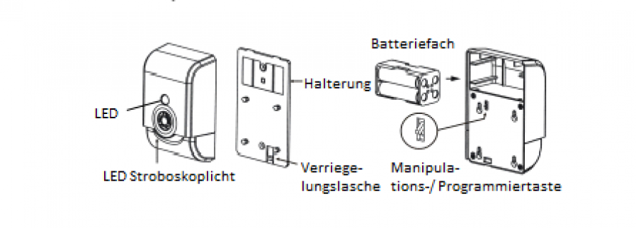

VIS_ZM1601
Firmware Version : 1.65 |
 |
KurzinfoA Dieses Gerät ist ein Z-Wave-Aktor. Drücken Sie zum Inkludieren oder Exkludieren der Sirene für eine Sekunde lang die Programmiertaste am Gerät. Weitergehende Informationen finden sich in den jeweiligen Abschnitten dieses Handbuches. |
Produktbeschreibung
Die Sirene warnt alle sich im Gebäude befindlichen Personen durch einen Alarm, bestehend aus einem lauten Ton und blinkendem Licht. Dieses Produkt ist speziell für Sicherheitsanwendungen in Kombination mit anderen Z-Wave Geräten wie Tür- oder Fenster-Sensoren oder Bewegungsmeldern geeignet. Die Sirene gibt einen lauten Warnton und ein blinkendes Warnlicht ab, so dass jeder im Gebäude sofort weiss, dass Alarm ausgelöst wurde. Der Lautstärkepegel der Sirene liegt in einem Abstand von 1 m bei > 105 dB. Das Gerät kann so konfiguriert werden, dass entweder nur das blinkende Licht oder die akustische Sirene oder beides bei einem Alarm ausgelöst werden. Ein Manipulationskontakt schützt das Gerät vor unbefugter Entfernung oder Manipulation bei einem Einsatz in Sicherheitsanwendungen. Die Stromversorgung dieses Gerätes erfolgt über 4 AA Batterien.
Installationsanleitung
1. Drücken Sie die Verriegelungslasche und lösen Sie die Sirene von der Halterung, indem Sie diese nach oben schieben.
2. Entnehmen Sie das Batteriefach und legen Sie die 4 AA Batterien in die Batteriefassung.
3. Für die Montage der Sirene befestigen Sie die Halterung mittels Schrauben oder doppelseitigem Klebeband an der Wand.
4. Befestigen Sie die Sirene wieder auf der Halterung.

Verhalten des Gerätes im Z-Wave Netz
I Im Auslieferungszustand ist das Gerät mit keinem Z-Wave-Netz verbunden. Damit es mit anderen Z-Wave Geräten kommunizieren kann, muss es in ein bestehendes Z-Wave Netz eingebunden werden. Dieser Prozess wird bei Z-Wave Inklusion genannt. Geräte können Netzwerke auch wieder verlassen. Dieser Prozess heißt bei Z-Wave Exklusion. Beide Prozesse werden von einem Controller gestartet, der dazu in einen Inklusion- bzw. Exklusion-Modus geschaltet werden muss. Das Handbuch des Controllers enthält Informationen, wie er in diese Modi zu schalten ist. Erst wenn der Controller des Z-Wave Netzes im Inclusion-Modus ist, können Geräte hinzugefügt werden. Das Verlassen des Netzes durch Exklusion führt zum Rücksetzen dieses Gerätes in den Auslieferungszustand.
Nachdem Sie den Controller in den Inklusions-/ Exklusion-Modus gesetzt haben, drücken Sie die Programmiertaste für eine Sekunde, um die Inklusion/ Exklusion des Gerätes zu bestätigen.
Während dieses Vorangs leuchtet die LED der Sirene und erlischt nach erfolgreicher Inklusion/ Exklusion wieder.
Bedienung des Gerätes
Befindet sich die Sirene im Normalmodus, ist die LED aus. Sobald ein Alarm von einem assoziierten Z-Wave Gerät ausgelöst wird, wechselt die Sirene in den Alarm Modus. Die Aktion der Sirene (nur Stroboskoplicht, nur Sirene, Licht und Sirene) ist dabei abhängig von der Konfiguration des Nutzers.
Konfigurationseinstellungen
Z-Wave Produkte können direkt nach der Inklusion im Netz verwendet werden. Durch Konfigurationseinstellungen kann das Verhalten des Gerätes jedoch noch besser an die Anforderungen der Anwendung angepasst und zusätzliche Funktionen aktiviert werden.
WICHTIG: Manche Steuerungen erlauben nur die Konfiguration von vorzeichenbehafteten Werten zwischen -128 und 127. Um erforderliche Werte zwischen 128 und 255 zu programmieren, muss der gewünschte Wert minus 256 eingegeben werden. Beispiel: um einen Parameter auf einen Wert von 200 zu setzen, müsste der Wert 200-256 = -56 eingegeben werden, wenn nur positive Werte bis 128 akzeptiert werden. Bei Werten von 2 Byte Länge wird die gleiche Logik angewandt: Werte über 32768 werden als negative Werte angegeben
| Wert | Beschreibung |
|---|---|
| 0 | Akustisch und Visuell (Voreingestellt) |
| 1 | nur Akustisch |
| 2 | nur Visuell |
| Wert | Beschreibung |
|---|---|
| 1 | 60 Sekunden |
| 2 | 120 Sekunden |
| 3 | kein Abschalten |
| 0 | 30 Sekunden (Voreingestellt) |
Technische Daten
| Batterietyp | 4 * AA |
| Explorer Frames | Ja |
| SDK | 4.54 pl1 |
| Geräteart | Slave with routing capabilities |
| Allgemeiner Z-Wave-Gerätetyp | Binary Switch |
| Spezieller Z-Wave-Gerätetyp | Specific Device Class not used |
| Router | Nein |
| FLiRS | Nein |
| Firmware Version | 1.65 |